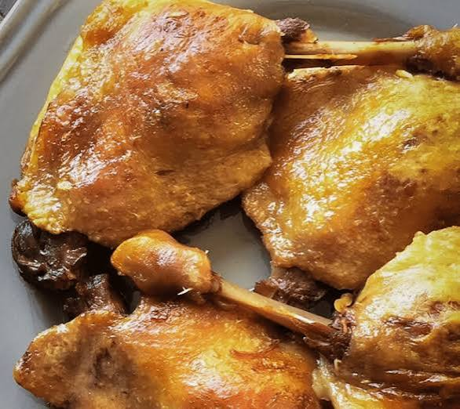

Confit
de canard


⟹ Plats Emblématiques ⟸
Le confit de canard est l’un des grands plats du Sud-Ouest et une pièce maîtresse de la cuisine du Quercy et de la Lomagne. Il s’agit de morceaux de canard — le plus souvent les cuisses, mais aussi les ailes, les gésiers ou les manchons — salés, puis cuits lentement et conservés dans leur propre graisse.

Le confit est d’abord une technique de conservation. Bien avant le réfrigérateur, les familles rurales du Sud-Ouest devaient conserver toute l’année la viande des volailles engraissées à l’automne. En cuisant la viande à basse température dans la graisse puis en la recouvrant entièrement de cette même graisse, on la protégeait de l’air et on pouvait la garder plusieurs mois dans un lieu frais.
Cette méthode, le confisage, est étroitement liée à l’élevage des palmipèdes gras. L’introduction du maïs venu d’Amérique, qui se répand dans le Sud-Ouest à partir des XVIe et XVIIe siècles, permet d’engraisser oies et canards bien plus efficacement que le millet. Les fermes du Quercy, de la Gascogne et du Périgord développent alors une véritable économie domestique du « gras ».
Chaque hiver, la « tuaille » ou journée du gras rassemble la famille et les voisins : on découpe les canards, on prépare les foies, on fait fondre la graisse, et l’on remplit les toupins, ces pots en grès vernissé où le confit repose sous une épaisse couche de graisse blanche. Ces réserves nourrissent la maisonnée jusqu’au printemps et au-delà.
Dans le Sud-Ouest, on dit qu’il ne faut rien jeter du canard : la viande pour le confit, le foie pour les fêtes, la graisse pour la cuisine de tous les jours.
Dicton des fermes du QuercyAu XIXe siècle, l’invention de l’appertisation (la conserve stérilisée) transforme la tradition domestique en activité artisanale puis industrielle. Les conserveries du Sud-Ouest diffusent le confit dans toute la France, en bocaux et en boîtes, et contribuent largement à la réputation gastronomique de la région.
Le confit de canard est aujourd’hui protégé par l’IGP « Canard à foie gras du Sud-Ouest » (Chalosse, Gascogne, Gers, Landes, Périgord, Quercy), reconnue en juin 2000. Elle garantit que les canards sont élevés, gavés au maïs, abattus et transformés dans le Sud-Ouest. Le cahier des charges cite d’ailleurs le confisage comme une technique typique, née dans le Sud-Ouest, qui donne aux viandes un goût et une texture uniques. Il existe aussi un Label Rouge pour le confit de canard du Sud-Ouest.
Dans le Tarn-et-Garonne, le confit est au cœur des repas de fête et des tablées de village : à la Fête de l’ail blanc de Beaumont-de-Lomagne, le grand repas de mille couverts associe traditionnellement tourin à l’ail et confit de canard. Il se sert le plus souvent avec des pommes de terre sautées à la graisse de canard et à l’ail, une poêlée de cèpes ou des haricots.
Le confit est aussi un ingrédient : il entre dans le cassoulet, la garbure et de nombreux plats mijotés. Sa graisse, précieuse, sert à rissoler les légumes et donne aux pommes de terre leur saveur inimitable.
Le confit gagne à reposer quelques jours sous sa graisse avant d’être consommé : la viande s’affine et devient plus fondante. Conservez la graisse filtrée pour vos pommes de terre.
Le conseil de la ficheConfit d’oie : la version historique des grandes fermes du Sud-Ouest, plus rare aujourd’hui, à la chair plus fine.
Gésiers confits : servis tièdes sur une salade de pays avec des noix, ils composent la célèbre salade quercynoise ou gasconne.
Manchons et ailes confits : morceaux plus modestes, souvent ajoutés aux garbures et aux soupes paysannes.
Cassoulet : le confit de canard est l’un des piliers du cassoulet, aux côtés des haricots et de la saucisse.
Parmentier de confit : version moderne et familiale : effiloché de confit recouvert de purée et gratiné au four.
Le confit de canard se déguste toute l’année dans les auberges, fermes-auberges et restaurants de terroir du département, et s’achète en conserve chez les producteurs.
Quercy (Caussade, Montpezat-de-Quercy, Caylus) cantons du Tarn-et-Garonne inclus dans l’IGP Canard à foie gras du Sud-Ouest – Quercy, où les éleveurs vendent leurs conserves à la ferme.
Beaumont-de-Lomagne lors de la Fête de l’ail blanc, fin juillet, le grand repas sous la halle du XIVe siècle associe tourin et confit de canard.
Montauban restaurants et marchés de la ville, où conserveurs et producteurs de canard proposent confits en bocaux.
Fermes-auberges du Quercy pour goûter le confit dans son cadre d’origine, servi avec les légumes de la ferme.
Marchés de Noël et foires au gras en fin d’année, l’occasion de faire provision de confits, foies gras et rillettes.